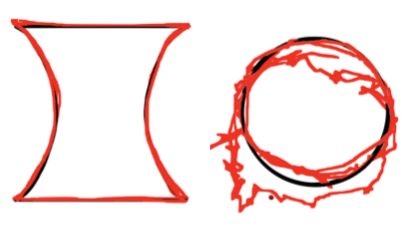

Comparing Input Modalities for Shape Drawing Tasks

Authors. Annalena Streichert, Katrin Angerbauer, Magdalena Schwarzl, Michael Sedlmair
Venue. ETVIS (2020) Workshop / Short Paper
Type. Workshop / Short Paper
Abstract. With the growing interest in Immersive Analytics, there is also a need for novel and suitable input modalities for such applications. We explore eye tracking, head tracking, hand motion tracking, and data gloves as input methods for a 2D tracing task and compare them to touch input as a baseline in an exploratory user study (N= 20). We compare these methods in terms of user experience, workload, accuracy, and time required for input. The results show that the input method has a significant influence on these measured variables. While touch input surpasses all other input methods in terms of user experience, workload, and accuracy, eye tracking shows promise in respect of the input time. The results form a starting point for future research investigating input methods.